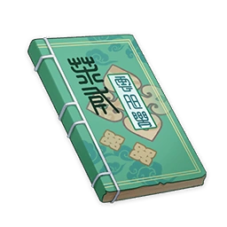

Liyue · Books & Literature
Records of Jueyun
This six-volume Liyue anthology collects folk stories, myths, and legends, from petrified beasts and Wuwang Hill to qilin ancestry and Dunyu Ruins. Its compiler is unnamed, and Volume IV explicitly cautions that the old tales have no credibility.

Six local traditions, no named compiler
Each volume describes Records of Jueyun as a collection of Liyue folk stories, myths, and legends. The in-game text does not name a compiler, so the record should not be credited to Wuyuan or another unsupported author.
The six volumes vary in subject and tone. Read them as collected traditions: some may preserve memories that can be compared with other sources, while their supernatural explanations and story details are not automatically historical fact.
Volumes I–III: stone beasts, a sea god, and Wuwang Hill
Volume I records Qingce elders’ explanation for stone animal statues: some were illuminated beasts who fought beside Rex Lapis and asked him to turn their mortal bodies into everlasting stone. The volume reports the elders’ belief; it does not independently establish the identity or history of each statue.
Volume II is a fable about a fishing village that gives a young woman to a sea god each year in exchange for calm waters. When the elders later come to take her daughter, the woman sounds a shell horn and the god’s tide engulfs the village as its people sleep.
Volume III tells how Wuwang Hill’s young people followed a distant monster’s song into the Bishui River. The book attributes the present apparitions to ley-line dream memories and a translation note identifies the sea monster as Rhodeia of Loch. These are the volume’s explanation and editorial gloss, not a general account of how all ley-line memories work.
Volume IV: seelies and the Lunar Palace sisters
The fourth volume surveys folk explanations for the small seelies found in Liyue, then recounts a mountain legend from a time said to predate the adepti. In that story, the seelie ancestor had a beautiful physical form and swore an oath of union with a traveler from afar; the three sisters of the Lunar Palace witnessed it.
The legend continues with a sudden calamity, exile, separation, and lost memories. It says the seelie and the sisters eventually dwindled into the little spirits known to people in the present. Volume IV closes by calling these accounts clumsy, incoherent folk tales with no credibility whatsoever. Later story material may give the Lunar Palace sisters separate context, but it does not turn every detail of this local seelie legend into verified history.
Volume V: a qilin and a human family
Volume V presents qilin as a noble class of illuminated beast and says some beasts left distinctive bloodlines in Liyue Harbor after the Archon War. Its central story follows a young qilin who meets a human herb gatherer and later has a child with him.
The tale offers two endings: the qilin may leave a child in a basket at the man’s door, or she may live with him as his wife. It supports the existence of a qilin-human lineage tradition, but the variant endings make it a poor source for a precise family history.
Volume VI: Dunyu’s star and abandoned city
The final volume says Dunyu’s ruins existed before the Archon Wars. It tells of a star falling in the plains, opening a chasm rich in jade, after which a city prospered through mining and trade with Liyue Harbor.
The tale places the city’s sealing and departure around five hundred years ago, when the black calamity and the Abyss rose. Its language preserves a regional memory of abandonment, but the story does not supply an independent chronology or explain the calamity in detail. Compare it with other Cataclysm-era records rather than using it as a complete history of Dunyu.
How to use the anthology
The collection is most useful as a record of what Liyue communities tell about their landscape and past. Volume III contains a translation gloss; Volumes IV and V openly preserve competing or qualified versions; and Volume IV explicitly rejects the historical credibility of its own distant-past stories.
The Lunar Palace reference can be compared with later game material about the Moon Sisters, while keeping that corroboration separate from the book’s claims about seelie ancestry, an oath, and the calamity. Likewise, Volume VI can be compared with independent accounts of the Cataclysm without treating its folk chronology as settled fact.
This is an original CoreGG reading guide, not an official HoYoverse article or a reproduction of the game text. Source links below identify the records used so you can check the original context.
Sources & references
Check these sources for the original game text and reference trail.